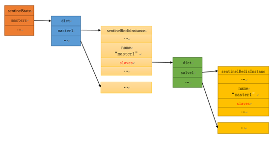
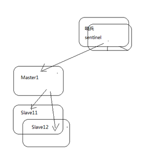
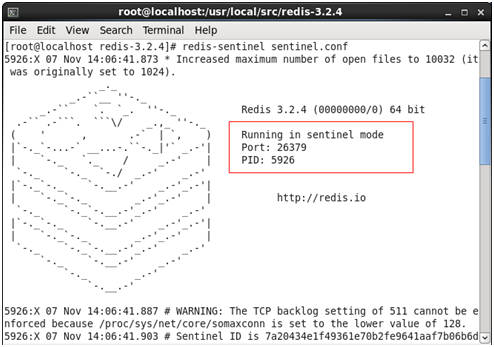
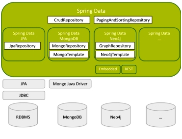
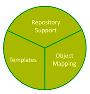

redis哨兵
本文于320天之前发表，文中内容可能已经过时。
哨兵sentinel
Redis Sentinel是一个分布式系统，你可以在一个架构中运行多个 Sentinel 进程（progress），这些进程使用流言协议（gossip protocols)来接收关于主服务器是否下线的信息，并使用投票协议（agreement protocols）来决定是否执行自动故障迁移，以及选择哪个从服务器作为新的主服务器。
Sentinel系统用于管理多个Redis服务器（instance），该系统执行以下三个任务：
监控（Monitoring）： Sentinel 会不断地检查你的主服务器和从服务器是否运作正常。
提醒（Notification）：当被监控的某个 Redis 服务器出现问题时，Sentinel 可以通过 API 向管理员或者其他应用程序发送通知。
自动故障迁移（Automatic failover）：当一个主服务器不能正常工作时， Sentinel 会开始一次自动故障迁移操作，它会将失效主服务器的其中一个从服务器升级为新的主服务器，并让失效主服务器的其他从服务器改为复制新的主服务器；当客户端试图连接失效的主服务器时，集群也会向客户端返回新主服务器的地址，使得集群可以使用新主服务器代替失效服务器。
哨兵的工作原理
sentinel以每10秒一次的频率向master发送info命令，通过info的回复来分析master信息，master的回复主要包含了两部分信息，一部分是master自身的信息，一部分是master所有的slave（从）的信息，所以sentinel可以自动发现master的从服务。sentinel从master获取到的master自身信息以及master所有的从信息，将会更新到sentinel的sentinelState中及masters（sentinelRedisInstance结构）中的slaves字典中。

哨兵sentinel-实现高可用
哨兵sentinel类似zookeeper。它含有监控，监控个节点的活跃状态。

上面配置了3个节点，但如果主宕机，整个缓存系统就瘫痪，如何实现主宕机，自动从多个从中选举出一个节点当主呢？redis在3.0版本之后提供了哨兵sentinel。通过哨兵实现高可用。
但一个哨兵也可能宕机，一次启动两个哨兵，自身也实现高可用。
cp sentinel.conf sentinel2.conf #复制哨兵
26379为26380 #修改端口
sentinel monitor mymaster192.168.163.20 63791 #设置访问名称
x#最后的数值为选举时过票数量（坑）
redis-sentinel sentinel.conf #启动哨兵
redis-sentinel sentinel2.conf #启动哨兵2，形成哨兵的高可用

ps –ef|grep redis #查看进程
6010 5709 0 00:38 pts/2 00:00:13 redis-server 127.0.0.1:6379
6012 5710 0 00:38 pts/2 00:00:13 redis-server 127.0.0.1:6380
6014 5721 0 00:38 pts/3 00:00:13 redis-server 127.0.0.1:6381
6018 5927 1 00:39 pts/6 00:00:21 redis-server *:26379 [sentinel]
6047 6037 1 00:41 pts/7 00:00:19 redis-server *:26380 [sentinel]
6241 2512 0 01:10 pts/1 00:00:00 grep redis
测试
kill 6010 #可以看到slave的两个节点开始报链接拒绝错误，不一会哨兵将6380切换为主
info #在6380上info命令，可以看到其role:master
kill 6018 #删除一个哨兵，在6380上set数据，6381自动同步
sentinel的坑
开放端口或者关闭防火墙
6379,6380,6381
26379,26380
service iptables stop
protected-mode
默认情况下，Redis node和sentinel的protected-mode都是yes，在搭建集群时，若想从远程连接redis集群，需要将redis node和sentinel的protected-mode修改为no，若只修改redis node，从远程连接sentinel后，依然是无法正常使用的，且sentinel的配置文件中没有protected-mode配置项，需要手工添加。
访问拒绝
sentinel.conf默认配置
sentinel monitor mymaster 127.0.0.1 6380 1
当redis和sentinel在一台服务器上时，必须指定实际的IP地址
sentinel monitor mymaster 192.168.163.200 6380 1
选举数
sentinel.conf中96行左右的位置
sentinel monitor mymaster 127.0.0.1 6379 2
最后的2代表选举的个数，这个值非常关键。其中的2表示只有在两个sential进程发现master不可用时才执行failover故障转移。例如：即使一个master宕机，如果投票个数未超过1个，redis不会触发failover，不会触发选举，而是一直等待master恢复，当master恢复，一切又工作正常。只有当投票数大于等于1时，才认为master才会触发选举，自动从众多的slave中选择一个节点升级为master，其他自动从节点自动连接次节点。同时会自动修改sentinel.conf文件
sentinel monitor mymaster 192.168.163.20 6380 1
默认30秒进行切换
修改从节点的选举优先级
redis.conf
slave-priority 100
这样当Master挂掉的时候Sentinel会优先选择slave-priority值较小的作为新的Master。
sentinel.conf配置详解
配置语句 说明
daemonize yes 以后台进程模式运行
port 26379 哨兵的端口号，该端口号默认为26379，不得与任何redis node的端口号重复
logfile “/var/log/redis/sentinel.log log文件所在地
sentinel monitor master1 192.168.56.101 7001 1 （第一次配置时）哨兵对哪个master进行监测，此处的master1为一“别名”可以任意，将来程序访问时使用，如sentinel-26379。然后哨兵会通过这个别名后的IP知道整个该master内的slave关系。因此你不用在此配置slave是什么而由哨兵自己去维护这个“链表”。
sentinel monitor master1 192.168.56.101 7001 1 最后一个1代表当节点宕机时的触发选举的判断条件，1就代表sentinel认定宕机的个数，必须大于这个个数，选举才开始发生，默认值为2，很坑。
sentinel down-after-milliseconds master1 1000 如果master在多少秒内无反应哨兵会开始进行master-slave间的切换，使用“选举”机制
sentinel failover-timeout master1 5000 如果在多少秒内没有把宕掉的那台master恢复，那哨兵认为这是一次真正的宕机，而排除该宕掉的master作为节点选取时可用的node然后等待一定的设定值的毫秒数后再来探测该节点是否恢复，如果恢复就把它作为一台slave加入哨兵监测节点群并在下一次切换时为他分配一个“选取号”。
安全访问
redis.conf
masterauth "123456"
requirepass "123456"
sentinel.conf
sentinel auth-pass mymaster 123456
否则在每个的redis-cli中执行语句：
CONFIGSET protected-mode no
jedis访问时
jedis.auth("123456");
jedis访问sentinel
@Test
public void sentinel(){
Set<String> sentinels = new HashSet<String>();
sentinels.add(new HostAndPort("192.168.163.200",26379).toString());
//sentinels.add(new HostAndPort("192.168.163.20",26380).toString());
//mymaster是在sentinel.conf中配置的名称
//sentinel monitor mymaster 192.168.163.200 6380 1
JedisSentinelPool pool = new JedisSentinelPool("mymaster", sentinels);
System.out.println("当前master：" + pool.getCurrentHostMaster());
Jedis jedis = pool.getResource();
//jedis.auth("123456");
System.out.println(jedis.get("num"));
pool.returnResource(jedis);
pool.destroy();
System.out.println("ok");
}
jedis 和Spring整合访问sentinel
jedis和spring整合访问sentinel需要一个整合包，这个整合包是通过spring-data支持。整合后会创建RedisTemplate对象，在伪service中就可以调用。
SpringData
Spring Data 作为SpringSource的其中一个父项目，旨在统一和简化对各类型持久化存储，而不拘泥于是关系型数据库还是NoSQL 数据存储。

Spring Data 项目旨在为大家提供一种通用的编码模式。

数据访问对象实现了对物理数据层的抽象，为编写查询方法提供了方便。通过对象映射，实现域对象和持续化存储之间的转换，而模板提供的是对底层存储实体的访问实现。
引入依赖包
<dependency>
<groupId>org.springframework.data</groupId>
<artifactId>spring-data-redis</artifactId>
<version>1.4.1.RELEASE</version>
</dependency>
<dependency>
<groupId>redis.clients</groupId>
<artifactId>jedis</artifactId>
<version>2.6.2</version>
</dependency>
整合配置文件applicationContext-sentinel.xml
<?xml version="1.0" encoding="UTF-8"?>
<beans xmlns="http://www.springframework.org/schema/beans"
xmlns:xsi="http://www.w3.org/2001/XMLSchema-instance" xmlns:p="http://www.springframework.org/schema/p"
xmlns:context="http://www.springframework.org/schema/context"
xmlns:jee="http://www.springframework.org/schema/jee" xmlns:tx="http://www.springframework.org/schema/tx"
xmlns:aop="http://www.springframework.org/schema/aop"
xsi:schemaLocation="
http://www.springframework.org/schema/beans http://www.springframework.org/schema/beans/spring-beans.xsd
http://www.springframework.org/schema/context http://www.springframework.org/schema/context/spring-context.xsd">
<bean id="poolConfig" class="redis.clients.jedis.JedisPoolConfig">
<property name="maxTotal" value="${redis.maxTotal}" />
<property name="minIdle" value="${redis.minIdle}" />
<property name="maxIdle" value="${redis.maxIdle}" />
</bean>
<bean id="sentinelConfiguration"
class="org.springframework.data.redis.connection.RedisSentinelConfiguration">
<property name="master">
<bean class="org.springframework.data.redis.connection.RedisNode">
<property name="name" value="${redis.sentinel.masterName}"></property>
</bean>
</property>
<property name="sentinels">
<set>
<bean class="org.springframework.data.redis.connection.RedisNode">
<constructor-arg name="host"
value="${redis.sentinel1.host}"></constructor-arg>
<constructor-arg name="port"
value="${redis.sentinel1.port}" type="int"></constructor-arg>
</bean>
<bean class="org.springframework.data.redis.connection.RedisNode">
<constructor-arg name="host"
value="${redis.sentinel2.host}"></constructor-arg>
<constructor-arg name="port"
value="${redis.sentinel2.port}" type="int"></constructor-arg>
</bean>
</set>
</property>
</bean>
<!-- p:password="${redis.sentinel.password}" -->
<bean id="connectionFactory"
class="org.springframework.data.redis.connection.jedis.JedisConnectionFactory">
<constructor-arg name="sentinelConfig" ref="sentinelConfiguration"></constructor-arg>
<constructor-arg name="poolConfig" ref="poolConfig"></constructor-arg>
</bean>
<bean id="redisTemplate" class="org.springframework.data.redis.core.StringRedisTemplate">
<property name="connectionFactory" ref="connectionFactory" />
</bean>
</beans>
属性配置文件redis-sentinel.properties
注意一个坑，属性文件中不能有空格，redis源码中不会去过滤空格，导致如果有空格就无法连接错误Can connect to sentinel, but mymaster seems to be not monitored。
redis.minIdle=300
redis.maxIdle=500
redis.maxTotal=5000
redis.sentinel1.host=192.168.163.200
redis.sentinel1.port=26379
redis.sentinel2.host=192.168.163.200
redis.sentinel2.port=26380
redis.sentinel.masterName=mymaster
redis.sentinel.password=123456
伪service类
package com.jt.common.service;
import java.util.concurrent.LinkedBlockingQueue;
import java.util.concurrent.ThreadPoolExecutor;
import java.util.concurrent.TimeUnit;
import org.apache.commons.lang3.concurrent.BasicThreadFactory;
import org.slf4j.Logger;
import org.slf4j.LoggerFactory;
import org.springframework.beans.factory.annotation.Autowired;
import org.springframework.dao.DataAccessException;
import org.springframework.data.redis.connection.RedisConnection;
import org.springframework.data.redis.core.RedisCallback;
import org.springframework.data.redis.core.RedisTemplate;
import org.springframework.stereotype.Service;
@Service
public class RedisSentinelService {
private Logger logger = LoggerFactory.getLogger("RedisSentinelService");
//有的工程需要，有的工程不需要。设置required=false，有就注入，没有就不注入。
@Autowired(required = false)
RedisTemplate<?, ?> redisTemplate;
// 线程池
private static final ThreadPoolExecutor executor = new ThreadPoolExecutor(
256, 256, 30L, TimeUnit.SECONDS,
new LinkedBlockingQueue<Runnable>(),
new BasicThreadFactory.Builder().daemon(true)
.namingPattern("redis-oper-%d").build(),
new ThreadPoolExecutor.CallerRunsPolicy());
public void set(final String key, final String value) {
redisTemplate.execute(new RedisCallback<Object>() {
@Override
public Object doInRedis(RedisConnection connection)
throws DataAccessException {
connection.set(
redisTemplate.getStringSerializer().serialize(key),
redisTemplate.getStringSerializer().serialize(value));
return null;
}
});
}
//设置值后并设置过期时间
public void set(final String key, final String value, final long seconds) {
redisTemplate.execute(new RedisCallback<Object>() {
@Override
public Object doInRedis(RedisConnection connection)
throws DataAccessException {
connection.set(
redisTemplate.getStringSerializer().serialize(key),
redisTemplate.getStringSerializer().serialize(value));
connection.expire(redisTemplate.getStringSerializer().serialize(key), seconds);
return null;
}
});
}
public String get(final String key) {
return redisTemplate.execute(new RedisCallback<String>() {
@Override
public String doInRedis(RedisConnection connection)
throws DataAccessException {
byte[] byteKye = redisTemplate.getStringSerializer().serialize(
key);
if (connection.exists(byteKye)) {
byte[] byteValue = connection.get(byteKye);
String value = redisTemplate.getStringSerializer()
.deserialize(byteValue);
logger.debug("get key:" + key + ",value:" + value);
return value;
}
logger.error("valus does not exist!,key:"+key);
return null;
}
});
}
public void delete(final String key) {
redisTemplate.execute(new RedisCallback<Object>() {
public Object doInRedis(RedisConnection connection) {
connection.del(redisTemplate.getStringSerializer().serialize(
key));
return null;
}
});
}
/**
* 线程池并发操作redis
*
* @param keyvalue
*/
public void mulitThreadSaveAndFind(final String keyvalue) {
executor.execute(new Runnable() {
@Override
public void run() {
try {
set(keyvalue, keyvalue);
get(keyvalue);
} catch (Throwable th) {
// 防御性容错，避免高并发下的一些问题
logger.error("", th);
}
}
});
}
}
调用代码
就把实现类换下即可，其它调用不变。
@Autowired
private RedisSentinelService redisService;
赏
 支付宝打赏
支付宝打赏
 微信打赏
微信打赏
支付宝打赏
微信打赏
如果文章对你有帮助，欢迎点击上方按钮打赏作者